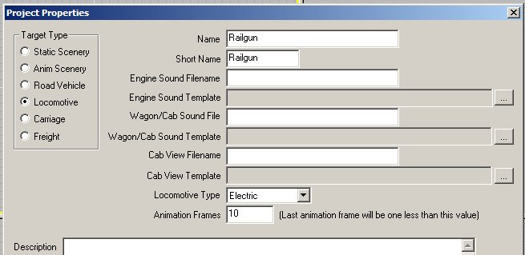
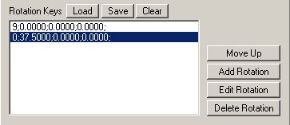

How To Animate An Electric Loco (And Make Parts Move Using The P Key): Section 1
by Paul DeVerter
A Port City Car Co. Project Copyright © 2005
SECTION 1 - The Rail Gun
This is a relatively simple model to learn on. What we want is a gun barrel that is up when the power is off and down when the object is ready to move under its own power or when hauled by another locomotive. Unfortunately, since it is really an Electric Locomotive, we are stuck with catenary over the track. We can solve that problem by going into Route Editor-Properties and lowering the wire down to ground level, or by raising it into the sky so that it can not be seen. I have read it is not possible to electrify a railroad by using the third rail option in the Route Editor, so you can not make an Electric Locomotive operate on what appears to be track without wires.
(Editor's Note: you may want to examine Removing catenary from Spur lines by Lukas A Lusser. Lukas demonstates a clever technique to "trick" MSTS into removing catenary locally, for example above a spur that is supposed to be non electrified.)
First off make a body or chassis for the gun. To illustrate the principles we are going to use simple shapes such as blocks and tubes and we are going to texture them with the same colorful bitmap file we used in the first tutorial. The colors are vivid and easy to see, for illustration purposes. The bmp used to texture this object, and all the others in this Section, is SteamEngine.bmp (click here for a 2k ZIP containing the BMP file).
Using the Box Tool, draw something like what is illustrated. A box that is 10 feet deep, 3 feet high, and perhaps 10 feet wide. This will be the chassis, so name it Main. Next use the Tube Tool to draw a barrel that is perhaps 15 feet long and 2½ feet in diameter, and taper it down to look sort of like a gun barrel. What I failed to do was to change the origin of the box - now it is almost 3 feet above the baseline origin in the drawing. This means that the center of the box will actually be at the top of the rail, instead of above the rail. But it doesn't matter for the purposes of this tutorial.
The photo above and to the right shows the barrel, but here I have moved the origin of the barrel from the center of the tube to the point where we want it to pivot. I did this by using the Move Tool and constraining X and Y, and then holding down the SHIFT key, moved the axes to the right to what I considered an appropriate pivot point.
Recall that this rail gun is going to have animated rotational movement, and I would like that to be about the pivot point, and not the center of the barrel. Now we need to texture the two parts, and I will leave that up to you. Then we need to do some housekeeping in order to set up the animation for the barrel.
Go to the Menu, and under File, choose Project Properties, and up comes the box named: Project Properties. Here we must choose a Name and a Short Name for this object. I chose Railgun. We must specify it to be a Locomotive, and in the Locomotive Type, pick Electric. In the Animation Frames I chose 10. You can use any number over 2, which is the minimum for a loco. Why 10? Well, the number of frames of animation directly affects the speed at which the animation takes place.

The larger the number of frames the longer it will take the barrel to raise and lower. It is also possible to adjust the speed of animation by uncompressing the .s file, and changing the animation number in that file. This was explained in the first tutorial in this series with regard to scenery objects and I have found that the same thing can be done to locomotives as well. In that instance, the number 30 seems to be the MSTS default, and lowering that number (instead of raising it) makes the animation slower. My experiments show it can be reduced to 4 or 5, and that does not seem to affect the wheels nor bogies, but your experience may vary.
What we want is a pretty slow movement of the barrel, you can always change it if you don't like my numbers. You may think that you will have to animate each of the frames, so that the more you choose, the more tedious it will become. Not true. You are about to learn a great trick in TSM animation.
First we have one more housekeeping chore to attend to. We need to make certain the parts are correctly named with the reserved train parts used by the P key. Go to the Menu, and under File, find and bring up Part Properties (F2). We are going to fix the properties of the barrel so it is obvious that the part should have Polygon Smoothing checked. This will make the barrel more or less round. Next we want the parent to be the chassis which we have named Main, so fix that under Part Parent. The really important thing is the Part Name. The P key only animates certain parts, and those are listed under Train Names, and only those that begin with Pantograph are controlled by the P key.
We could pick any of those having to do with Pantograph but let's stick with what would be the primary Pantograph of a Locomotive, and that is the one on the front in the 1 series. So, chose PantographBottom1 for the Part Name from the Train Names drop-down list. Ignore the notation of Rotation after the Animation box because these photos were made after the fact.
Now it is time to begin the animation. Just as in the Scenery animation we click on the "Ani" button to bring up the animation controls for the Pantograph. First we must understand what is likely to happen when the object loads in the Sim. This is controlled by the eng file, and more particularly the line that begins with:
PantographToggle1 ( 0 1 1 )
This is located near the bottom of the eng file. What is shown is the default line which is generated by TSM when the Railgun Electric Loco is made. As I understand the parameters, the first number "0" is the beginning animation frame position, the first "1" is the ending animation frame position, and the third number, which is also a "1" is the position picked by you when setting up the eng file, and the default is "1". So, this means that the beginning Frame is the 1st animation frame (thus the 0), the ending animation frame is the "1" or last animation frame (the middle number), and the eng file will begin with either the first or the last frame, depending on whether the last number is "0" or "1". Consequently, if you have the line shown above, the Sim will begin with the Pantograph in the last position. On the other hand, you can change the numbers so that the line reads:
PantographToggle1 ( 0 1 0 )
This will cause the Sim to begin the Electric Loco with the pantograph in the beginning animation frame. If you animate the barrel with the first animation frame in the up position, and the ending animation frame in the down position, and you wish the Electric Loco to be in the down position when the game starts, then you will want the third number to reflect the down position or "1".
Let's begin the animation. Remember we have 10 animation frames which means in the TSM program we will have Frames 0 through 9, which makes 10.
In the TSM program, click on the "Ani" button, and here is what you have:
The Animate Part box comes up and shows that you are in Frame 0 and that the Last Animation Frame is 9. We have the buttons at the top set for Rotate and the X axis is constrained. The barrel is down. Press Set Rotation. The beginning animation will be as the photograph shows. The barrel will be down.
Next move the Frame slider to the right until we get to Frame 9
This will be the last frame of animation, and we want the barrel raised to the up position. So, manipulate the Mouse until the barrel is raised as shown. Click Set Rotation again. That is all there is to setting the rotation, and since we are not messing with Motion, we will not touch that button.
Lets take a moment and peek at the Animation numbers in the rot file we have just constructed. Return the Slider to the left so you are in Frame 0, get out of Animate Part, and while the barrel is selected, push F2 Part Properties, click on the Animation box toward the bottom right, and up comes the Part Animation box. Notice it has animation only in the Rotation Keys, and only Frames 0 and 9. Also note that the Frame 9 has an odd number namely 37.500004. We can easily clear that up, by selecting row 9 and the hitting the Edit Rotation button, and now we have the Rotation box showing Frame 9.
Change the number in the X Axis to simply 37.5, click OK, and it is done.
What about all the animation in the middle? Well, it is all taken care of by TSM, and you do not need to do anything about the middle. The barrel will automatically and slowly move from the Frame 0 position to the Frame 9 position in the Sim, without you doing anything further. Amazing. Of course, it does not look that way in TSM, and when you move the slider back to a lower number, the barrel will drop back to the position shown in Frame 0, and you may think this will not work. E.g., move the slider back to Frame 2, and you will see the barrel is at the same position as in Frame 0, so far as TSM is concerned. But suppose you take my word for it and go ahead and generate a Train Sim Loco.
Go to Menu, File, Create Train Simulator Object, and let's fill in the blanks and see what we really have. We have already taken care of Project Properties so the additional information we need is covered by checking all the boxes shown in the next photo. Push the Continue button at the bottom, and this will automatically generate a generic Electric Locomotive with Sound file and Cabview file, as well as the ace file, s, sd, and eng files, and put them into a new Folder called Railgun, ready to run. You will need to go the Activity Editor and generate a Consist for the new Electric Locomotive called Railgun, and then go to the Sim and see what you have.
You will notice that you have not made provision for any bogies, nor wheels. You may think these are necessary for a locomotive to work in the Sim. Not so. You will have made a loco that will run just fine without any wheels, and buried part way into the track. This is an exceedingly simple way to try out what you are experimenting with, and play with it. It also has the advantage of placing all the operative parts and Folders into the Railgun Folder at the click of a single button. The added advantage is that you can add to the loco in much the same manner and you can remove it from the TRAINSET Folder by simply deleting the Railgun Folder.
Back to the Create Train Simulator Object box, and after you have pushed Continue, you must then make a Consist in the Activities-Consist Editor.
What you should have is shown by the next two photos. Try running your new Railgun around: release the brakes, advance the throttle, and try out the P key.

The one on the left is with the barrel up, and the power is on so that the loco will run. If you press the P key, the barrel will slowly come down, and the power to the loco will go off, and you can only brake it if moving, but the throttle will not work. We have the animation backwards don't we. We do not want the gun to run when it is up, but only when it is down.
What to do? The answer is to reverse the animation frames so that Frame 0 becomes Frame 9 and vice versa. How to do that? Well, you must go back to the F2 Part Properties window and click on the Animation bottom in the bottom portion, and then do your adjusting in the Edit box for Rotation of this object. We have learned that animation Frame 0 is actually the non-powered position of the Pantograph, while the last animation Frame, here 9, is the powered position. So, lets go through the steps of making the needed edits even though you were taught how to in Tutorial Part 1, because you will need to use this technique often. We have learned that the third number in the toggle in the .eng file has nothing to do with raising or lowering the barrel in the Railgun, but has to do with whether the Sim starts with the first animation frame or the last animation frame.
What follows is the step-by-step adjustment (or reversal) of the animation frames. We have reopened the Part Animation box for the barrel. What we want to do is reverse the rotation data for Frames 0 and 9. Click on the line for Frame 9 to select it, and then
click on the Edit Rotation button. This will bring up the Rotation box, and change the top item, which reads Frame 9 so that it now reads 0.
Then click OK, and you are back to the Part Animation box, which now shows 2 lines that begin with 0.
We have changed the former 9, so let's now select (click on) the old 0, at the top of the list
and again click the Edit button. This brings up the Rotation box again, and now we simply need to change the 0 to a 9 in the top line
Do so, and click OK again, and we are back to the Part Animation box again. But there is
still a problem. The top line reads 9, and it should read 0, to be in the proper order. So click on the bottom line, which starts with 0, to select it.

Then click on the Move Up button, and the 0 line will move up to the top, where it belongs. Now click on the OK button, and you are out of Part Animation and back to Part Properties.
Try out your revised animation frames in the .dst file, and you will see that you have reversed them. The Frame 0 will now show the barrel up, and Frame 9 will show it down. To move this new animation to the Sim, we will have to again Create a Train Simulator Object. We have not changed the texture file, nor the Cabview, Sound, and eng files. What we have changed will only affect the .s file.
Go to the Create Train Simulator box, and uncheck the boxes that do not need

to be checked. To update the .s file the only two that need to be checked are Convert to Binary and Replace Existing Files, as shown above. Click Continue, and check out your Railgun with the reversed frames in the Sim.